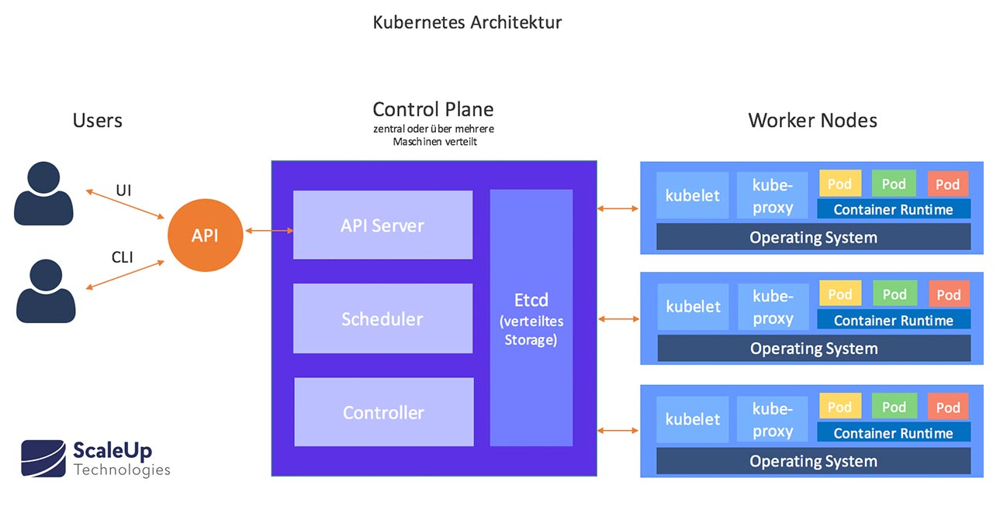
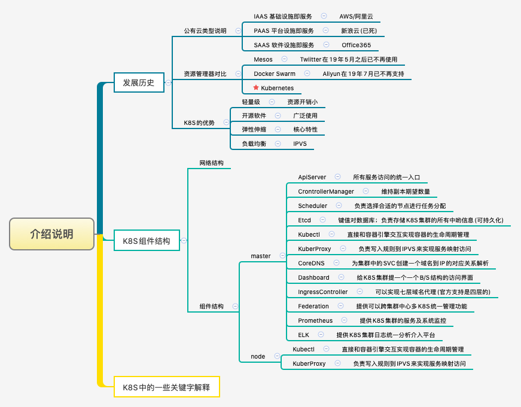
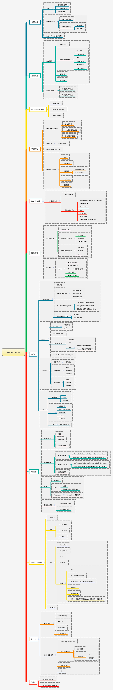
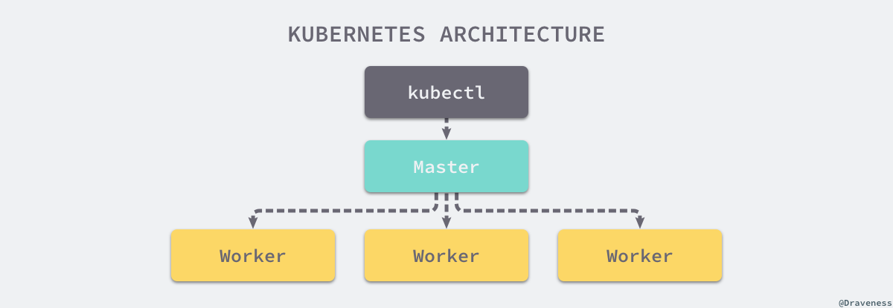

虽然
Docker已经很强大了，但是在实际使用上还是有诸多不便，比如集群管理、资源调度、文件管理等等。那么在这样一个百花齐放的容器时代涌现出了很多解决方案，比如Mesos、Swarm、Kubernetes等等，其中谷歌开源的Kubernetes是作为老大哥的存在。

1. 发展经历
历史总是不尽的相同，好的总会取代坏的。
Kubernetes 是希腊语『舵手』的意思，它最开始由 Google 的几位软件工程师创立，深受公司内部 Borg 和 Omega 项目的影响，很多设计都是从 Borg 中借鉴的，同时也对 Borg 的缺陷进行了改进，Kubernetes 目前是 CNCF 的项目并且是很多公司管理分布式系统的解决方案。其中比较有意思的一点是，Kubernetes 的简写称为 k8s。即该单词 k 和 s 中间刚好是 8 个字母组成，所以是一种单词的简写形式。类似于，我们在项目中使用的国际化(internationalization)叫做 i18n 是一样效果。

建于 Docker 之上的 Kubernetes 可以构建一个容器的调度服务，其目的是让用户透过 Kubernetes 集群来进行云端容器集群的管理，而无需用户进行复杂的设置工作，系统会自动选取合适的工作节点来执行具体的容器集群调度处理工作。
其核心概念是 Container Pod。一个 Pod 由一组工作于同一物理工作节点的容器构成。这些组容器拥有相同的网络命名空间、IP以及存储配额，也可以根据实际情况对每一个 Pod 进行端口映射。此外，Kubernetes 工作节点会由主系统进行管理，节点包含了能够运行 Docker 容器所用到的服务。
我们可以看到多种服务方式
- 阿里云 => Infrastructure as a service
- 新浪云 => Platform as a service
- Office365 => Software as a service
作为编排工具，从社区的年龄来讲，Kubernetes 不占优势。毕竟 Kubernetes 才三岁而已，而 Apache 推出的 Mesos 已经有 7 年之久。Docker Swarm 虽然是比 Kubernetes 更年轻，但是它的背后是来自于 Docker 官方容器中心的全方位支持。但是，因为是谷歌开源出来的，并且拥有十多年的容器化的经验，所以还是有很多人在使用，并且会变成以后整个行业的主要支柱。
Kubernetes 解决的核心问题
- 服务发现和负载均衡
- Kubernetes 可以使用 DNS 名称或自己的 IP 地址公开容器，如果到容器的流量很大，Kubernetes 可以负载均衡并分配网络流量，从而使部署稳定。
- 存储编排
- Kubernetes 允许您自动挂载您选择的存储系统，例如本地存储、公共云提供商等。
- 自动部署和回滚
- 您可以使用 Kubernetes 描述已部署容器的所需状态，它可以以受控的速率将实际状态更改为所需状态。例如，您可以自动化 Kubernetes 来为您的部署创建新容器，删除现有容器并将它们的所有资源用于新容器。
- 自动二进制打包
- Kubernetes 允许您指定每个容器所需 CPU 和内存（RAM）。当容器指定了资源请求时，Kubernetes 可以做出更好的决策来管理容器的资源。
- 自我修复
- Kubernetes 重新启动失败的容器、替换容器、杀死不响应用户定义的运行状况检查的容器，并且在准备好服务之前不将其通告给客户端。
- 密钥与配置管理
- Kubernetes 允许您存储和管理敏感信息，例如密码、OAuth 令牌和 ssh 密钥。您可以在不重建容器镜像的情况下部署和更新密钥和应用程序配置，也无需在堆栈配置中暴露密钥。
Kubernetes 的出现不仅主宰了容器编排的市场，更改变了过去的运维方式，不仅将开发与运维之间边界变得更加模糊，而且让 DevOps 这一角色变得更加清晰，每一个软件工程师都可以通过 Kubernetes 来定义服务之间的拓扑关系、线上的节点个数、资源使用量并且能够快速实现水平扩容、蓝绿部署等在过去复杂的运维操作。
2. 性能对比
当今三大主流调度系统的比较与分析
- 对比总结
| 分部署资源管理框架 | 主要特点 | 注释说明 |
|---|---|---|
Apache Mesos |
比较复杂且不易使用 | 2019 年 Twitter 宣布不再使用 |
Docker Swarm |
功能比较少但自带安装 | 2019 年阿里云宣布不再支持 |
Google Kubenetes |
功能强大但安装费劲 | 10 年容器化基础架构；高效快捷 |
- Apache Mesos
Apache Mesos 是一个分布式系统内核的开源集群管理器，Apache Mesos 的出现要远早于 Docker Swarm 和 Kubernetes。再加上 Marathon 这个基于容器的应用程序的编排框架，它为 Docker Swarm 和 Kubernetes 提供了一个有效的替代方案。Mesos 同时可以使用其他框架来同时支持容器化和非容器化的工作负载。
Mesos 能够在同样的集群机器上运行多种分布式系统类型，可以更加动态高效的共享资源。而且 Messos 也提供服务失败检查，服务发布，服务跟踪，服务监控，资源管理和资源共享。Messos 可以扩展伸缩到数千个节点。 如果你拥有很多的服务器而且想构建一个大的集群的时候，Mesos 就派上用场了。很多的现代化可扩展性的数据处理应用都可以在 Mesos 上运行，包括大数据框架 Hadoop、Kafka、Spark。 但是大而全，往往就是对应的复杂和困难，这一点体现在 Messos 上是完全正确，与Docker 和 Docker Swarm 使用同一种 API 不同的，Mesos 和 Marathon 都有自己的 API，这使得它们比其他编排系统更加的复杂。 Apache Mesos 是混合环境的完美编配工具，由于它包含容器和非容器的应用，虽然 Messos 很稳定，但是它的使用户快速学习应用变得更加困难，这也是在应用和部署场景下难于推广的原因之一。
- Docker Swarm
Docker Swarm 是 Docker 公司的容器编排系统，使用的是标准 Docker API 接口，容器使用命令和 docker 命令是一套，简单方便。Docker Swarm 基本架构是也是简单直接，每个主机运行一个 Docker Swarm 代理，一个主机运行一个 Docker Swarm 管理者，这个管理者负责指挥和调度这些主机上的容器，Docker Swarm 以高可用性模式运行，Docker Swarm 中的一个节点充当其他节点的管理器，包括调度程序和服务发现组件的容器。 Docker Swarm 的优点和缺点都是使用标准的 Docker 接口，因为使用简单，容易集成到现有系统，所以在支持复杂的调度系统时候就会比较困难了，特别是在定制的接口中实现的调度。这也许就是成也在 Docker，败也在 Docker 的原因所在。
- Kubernetes
Kubernetes 作为一个容器集群管理系统，用于管理云平台中多个主机上的容器应用，Kubernetes 的目标是让部署容器化的应用变得简单且高效，所以 Kubernetes 提供了应用部署，规划，更新，维护的一整套完整的机制。
Kubernetes 没有固定要求容器的格式，但是 Kubernetes 使用它自己的 API 和命令行接口来进行容器编排。 除了 Docker 容器之外，Kubernetes 还支持其他多种容器，如 rkt、CoreOS 等。 Kubernetes 是自成体系的管理工具，可以实现容器调度，资源管理，服务发现，健康检查，自动伸缩，更新升级等，也可以在应用模版配置中指定副本数量，服务要求（IO 优先；性能优先等），资源使用区间，标签（Labels等）来匹配特定要求达到预期状态等，这些特征便足以征服开发者，再加上 Kubernetes 有一个非常活跃的社区。它为用户提供了更多的选择以方便用户扩展编排容器来满足他们的需求。但是由于 Kubernetes 使用了自己的 API 接口，所以命令系统是另外一套系统，这也是 kubernetes 门槛比较高的原因所在。
大部分的应用程序我们在部署的时候都会适当的添加监控，对于运行载体容器则更应该如此。kubernetes 提供了 liveness probes 来检查我们的应用程序，它是由节点上的 kubelet 定期执行的。
3. 知识图谱
主要介绍学习一些什么知识

4. 软件架构
传统的客户端服务端架构

- [1] 架构说明
Kubernetes 遵循非常传统的客户端/服务端的架构模式，客户端可以通过 RESTful 接口或者直接使用 kubectl 与 Kubernetes 集群进行通信，这两者在实际上并没有太多的区别，后者也只是对 Kubernetes 提供的 RESTful API 进行封装并提供出来。每一个 Kubernetes 集群都是由一组 Master 节点和一系列的 Worker 节点组成，其中 Master 节点主要负责存储集群的状态并为 Kubernetes 对象分配和调度资源。


- [2] 主节点服务 - Master 架构
作为管理集群状态的 Master 节点，它主要负责接收客户端的请求，安排容器的执行并且运行控制循环，将集群的状态向目标状态进行迁移。Master 节点内部由下面三个组件构成：
API Server: 负责处理来自用户的请求，其主要作用就是对外提供 RESTful 的接口，包括用于查看集群状态的读请求以及改变集群状态的写请求，也是唯一一个与 etcd 集群通信的组件。
etcd: 是兼具一致性和高可用性的键值数据库，可以作为保存 Kubernetes 所有集群数据的后台数据库。
Scheduler: 主节点上的组件，该组件监视那些新创建的未指定运行节点的 Pod，并选择节点让 Pod 在上面运行。调度决策考虑的因素包括单个 Pod 和 Pod 集合的资源需求、硬件/软件/策略约束、亲和性和反亲和性规范、数据位置、工作负载间的干扰和最后时限。
controller-manager: 在主节点上运行控制器的组件，从逻辑上讲，每个控制器都是一个单独的进程，但是为了降低复杂性，它们都被编译到同一个可执行文件，并在一个进程中运行。这些控制器包括：节点控制器(负责在节点出现故障时进行通知和响应)、副本控制器(负责为系统中的每个副本控制器对象维护正确数量的 Pod)、端点控制器(填充端点 Endpoints 对象，即加入 Service 与 Pod))、服务帐户和令牌控制器(为新的命名空间创建默认帐户和 API 访问令牌)。

- [3] 工作节点 - Node 架构
其他的 Worker 节点实现就相对比较简单了，它主要由 kubelet 和 kube-proxy 两部分组成。
kubelet: 是工作节点执行操作的 agent，负责具体的容器生命周期管理，根据从数据库中获取的信息来管理容器，并上报 pod 运行状态等。
kube-proxy: 是一个简单的网络访问代理，同时也是一个 Load Balancer。它负责将访问到某个服务的请求具体分配给工作节点上同一类标签的 Pod。kube-proxy 实质就是通过操作防火墙规则(iptables或者ipvs)来实现 Pod 的映射。
Container Runtime: 容器运行环境是负责运行容器的软件，Kubernetes 支持多个容器运行环境: Docker、 containerd、cri-o、 rktlet 以及任何实现 Kubernetes CRI(容器运行环境接口)。


5. 组件说明
主要介绍关于 K8s 的一些基本概念

主要由以下几个核心组件组成：
apiserver- 所有服务访问的唯一入口，提供认证、授权、访问控制、API 注册和发现等机制
controller manager- 负责维护集群的状态，比如副本期望数量、故障检测、自动扩展、滚动更新等
scheduler- 负责资源的调度，按照预定的调度策略将 Pod 调度到相应的机器上
etcd- 键值对数据库，保存了整个集群的状态
kubelet- 负责维护容器的生命周期，同时也负责 Volume 和网络的管理
kube-proxy- 负责为 Service 提供 cluster 内部的服务发现和负载均衡
Container runtime- 负责镜像管理以及 Pod 和容器的真正运行
除了核心组件，还有一些推荐的插件：
CoreDNS- 可以为集群中的 SVC 创建一个域名 IP 的对应关系解析的 DNS 服务
Dashboard- 给 K8s 集群提供了一个 B/S 架构的访问入口
Ingress Controller- 官方只能够实现四层的网络代理，而 Ingress 可以实现七层的代理
Prometheus- 给 K8s 集群提供资源监控的能力
Federation- 提供一个可以跨集群中心多 K8s 的统一管理功能，提供跨可用区的集群